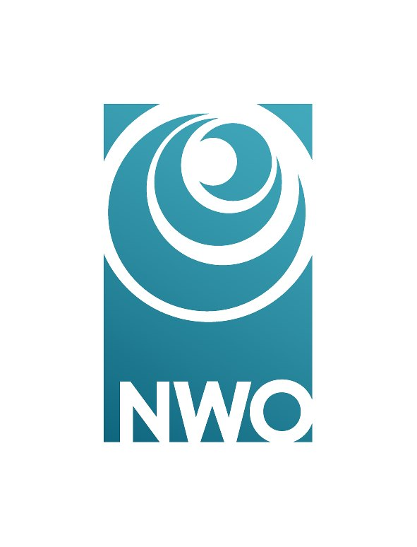

ASPERGE
Aragonite at the Seafloor: a secret PlayEr in the ReGulation of Earth's climate?

About a quarter of the Earth's surface is covered by marine sediments rich in calcium carbonates (CaCO₃), whose dissolution acts as a natural buffer against ocean acidification driven by human CO₂ emissions. In the open ocean, calcium carbonates occur mainly as calcite, the least soluble form, and aragonite, a more soluble mineral produced by pteropods (sea butterflies) and thought to dissolve before reaching the deep ocean.
However, the amount of aragonite present in the ocean remains highly uncertain, with estimates ranging from 10 to 90% of total marine carbonate production. As a result, aragonite cycling is poorly understood and often neglected in biogeochemical models. Recent observations show that aragonite grains can reach the seafloor, even at abyssal depths, where their dissolution may represent a significant and previously unaccounted source of alkalinity, enhancing carbonate preservation in the deep ocean.
ASPERGE is a three-year research project combining global data analyses, model simulations, and laboratory experiments to quantify seafloor aragonite dissolution, assess its role in the global calcium carbonate cycle, and evaluate its importance in the context of Anthropocene ocean acidification.
Objectives
- Determine the fate of aragonite in the ocean, particularly its ability to reach and dissolve at the seafloor.
- Clarify the role of aragonite in the global calcium carbonate cycle, a component still poorly quantified and often neglected.
- Assess its contribution to ocean buffering capacity in the context of ongoing anthropogenic ocean acidification.
Approach
The project combines global data analyses, biogeochemical model simulations, and laboratory experiments to investigate aragonite dissolution processes and their implications for the marine carbon system.
Expected Impacts
- Improved representation of carbonate processes in climate models, leading to more robust future climate predictions.
- Enhanced understanding of deep-ocean alkalinity sources and carbonate preservation mechanisms.
- Better evaluation of ocean acidification impacts, particularly those linked to vulnerable organisms such as pteropods.
Project funded by The Dutch Research Council (NWO).
All projects